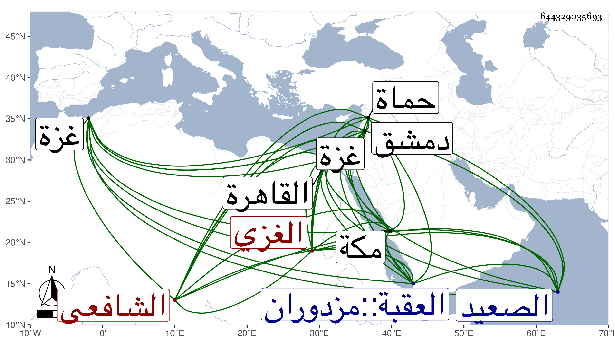

0902Sakhawi.DawLamic.ITO20230111-ara1.EIS1600.644329035693
Biography ID: 644329035693
126
محمد بن أحمد بن محمد بن خضر الشمس أبو الوفا الغزي الشافعي ويعرف بابن الحمصي . ولد في سنة اثنتي عشرة وثمانمائة بغزة . ونشأ بها فقرأ القرآن عند الشهاب بن الجوبان . وحفظ المنهاج وجمع الجوامع والألفيتين والشاطبية والشمسية والخزرجية وغيرها . وعرض على جماعة وأخذ عن الشمس البرماوي والعز القدسي وابن رسلان وغيرهم . وارتحل إلى القاهرة فأخذ بها عن شيخنا وقرأ عليه في كل من بلوغ المرام والنخبة وشرحها له والقاياتي والونائي ، وسافر منها إلى الصعيد وأخذ ببوش منها عن ابن المالكي . وكذا ارتحل لدمشق فأخذ بها عن . التقي بن قاضي شهبة أشياء منها شرحه للمنهاج وأصلح فيه أماكن بتنبيهه وأشار لقراءته عليه في ترجمة ابن الأعسر فقال وولي عوضه شمس الدين الحمصي وهو شاب فاضل كان عندي من مدة قريبة وقرأ على بعض شرحي للمنهاج انتهى . ولقي فيها ابن زهرة فأخذ عنه وسمع الحديث على والده وابن ناصر الدين ومن قبلهما على ابن البزري ، وكذا أخذ عن ابن خطيب الناصرية إما بدمشق أو في مروره عليهم . وأجاز له ناصر الدين بن بهادر الأياسي وابن الأعسر الغزيان وجماعة واشتدت عنايته بملازمة أبي القسم النويري وهو المشير عليه بالتحول من مذهب الحنفية إلى الشافعية ، وبرع في الفقه وأصوله والعربية وغيرها وشارك في الفضائل وولى قضاء بلده بعد موت ابن الأعسر مسئولا فيه بعناية شيخه أبي القسم فباشره مباشرة حسنة وصرف عنه غير مرة بعضها بالشرف موسى بن مفلح وتوجه في هذه المرة إلى مكة فاسترجع من العقبة وجمع بينه وبين خصمه فبان بطلان ما أنهاه في حقه فأعيد على وجه جميل ، واستمر حتى مات الظاهر . وكذا ولي قضاء حماة مرتين وعقد فيها مجلسا للتفسير ، ثم أعرض عن ذلك كله حين تفاقمت الأحوال بالرشا ، وأقام منعزلا عن الناس مديما للاشتغال والأشغال والإفتاء وقراءة الصحيح في الجامع القديم ببلده في الأشهر الثلاثة والوعظ والخطابة وصار شيخ البلد بغير مدافع ومع ذلك فلم يخل من طاعن في علاه ظاعن عن حماه ، كل ذلك مع حسن الشكالة ولطيف العشرة ومزيد التواضع . وقد حدث وممن لقيه بأخرة العز بن فهد وقرأ عليه في سنة سبعين وثلاثيات الصحيح . وسمع من لفظه خطبة منظومة ابن الحسين لتمييز الشرف بن البارزي في الفقه بسماعه من والده بسماعه من ناظمها وكتب عنه الشمس بن حامد المقدسي ما كتب به إليه في مراسلة :
| يا غائبا شخصه عنى مسكنه | على الدوام بقلب الواله العاني |
| هو المقدس لما أن حللت به | لكنه ليس فيه عين سلوان |
وكذا كتب إلي في مراسلة :
| يا خادما أخبار أشرف مرسل | وسخا فنسبته إليه سخاوى |
| وحوى السياسة والرياسة ناهجا | منهاج حبر للمكارم حاوي |
وبالغ في الثناء حتى أنه لقب بمشيخة الإسلام . مات في آخر يوم الاثنين ثامن ربيع الأول سنة إحدى وثمانين ودفن بتربة التفليسى ولم ير في تلك النواحي أعظم مشهدا من جنازته ولا أكثر باكيا فيها ولم يخلف بها مثله رحمه الله وإيانا .
